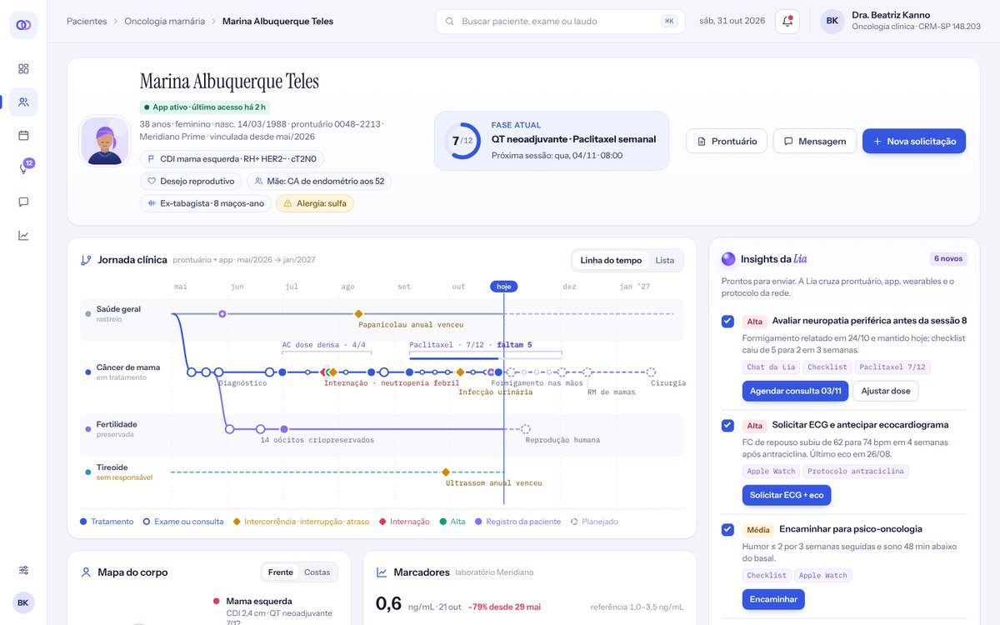
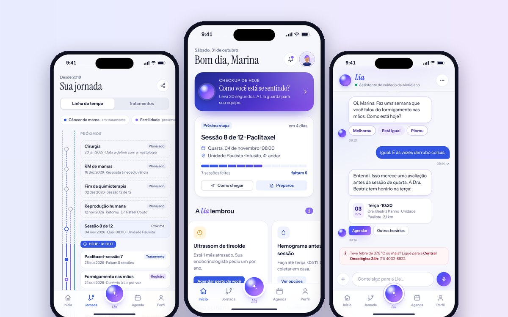
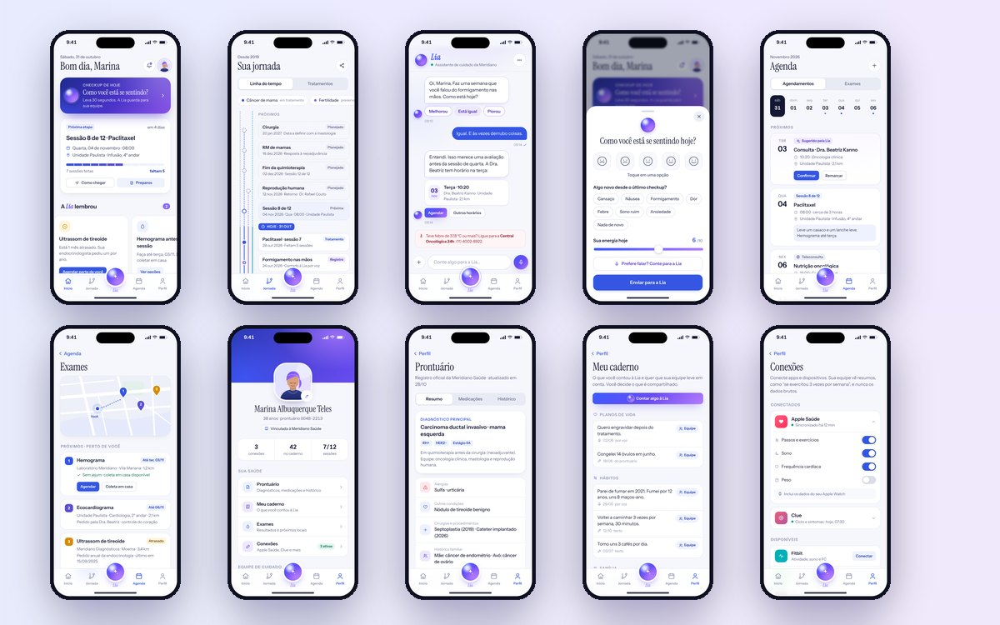

O OncoLink conecta a rede de saúde, o paciente e os dados do dia a dia. Lembra exames atrasados, registra o que o paciente conta, cruza com o prontuário e entrega ao médico insights prontos para agir.

Jornada clínica, mapa do corpo, marcadores, Apple Watch e Clue, rotina, checklist de bem-estar, adesão e insights prontos para enviar.
Abrir
Navegue pela barra inferior, converse com a Lia, faça o checkup e agende um exame.
Abrir
As 14 telas do app lado a lado, incluindo jornada, caderno, notificações e privacidade.
AbrirExames atrasados, protocolos do último médico e o padrão de rastreio da rede, mesmo para quem está entre especialistas.
Um relato por voz vira registro no caderno e volta uma semana depois como pergunta.
Apple Saúde, Clue, Fitbit e outros chegam ao médico como resumos, nunca como dados brutos.
O médico vê insights com a origem de cada sinal e envia o pedido em um clique.
Protótipo da NeuroDynamics para o MIT Hacking Medicine 2026 Brasil · marcondes@neurodynamics.dev. Pessoas, instituição e dados clínicos são fictícios.